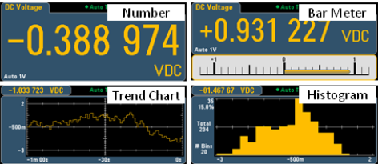

key, followed by the Display softkey allows you to select the display type:
key, followed by the Display softkey allows you to select the display type:By default, the instrument displays readings as a number. You can also select a Bar Meter, Trend Chart (34461A/65A/70A only), or Histogram display:

For the Number and Bar Meter displays, many primary measurement functions allow you to display a secondary measurement. See Secondary Measurements for details.
Pressing the key, followed by the Display softkey allows you to select the display type:

The following table summarizes the various instrument display types for each measurement mode.
| Display Type | |||||
|---|---|---|---|---|---|
| Mode | Number | Bar Meter | Trend Chart | Histogram | Comments/Uses |
| Continuous | Power-on default, present measurement on display. | Number + bar graph, present measurement on display. | Measurements spanning a specified amount of time, and displayed as strip chart (Trend), or histogram. Exact measurement values not accessible from front panel. | Trend and Histogram data is display only, individual reading values not available from front panel. | |
| Data Log | Present reading on display. All other points stored as specified in Acquire menus. Remaining time and remaining samples displayed near bottom. | Chart or Graph populated as samples taken. Zoom, pan and cursors available to facilitate individual measurement viewing. |
Standard on the 34465A and 34470A only. See Data Log Mode for details. |
||
| Digitize | Present reading on display. All other points stored as specified in Acquire menus. Remaining time and remaining samples displayed near bottom. | Chart or Graph populated as samples taken. Zoom, pan and cursors available to facilitate individual measurement viewing. | 34465A and 34470A only, requires DIG option. Optimized for high speed sampling. Max sample interval 100 ms, min 20 µs. See Digitize Mode for details. | ||
Click a link below for more information on any of the display types: